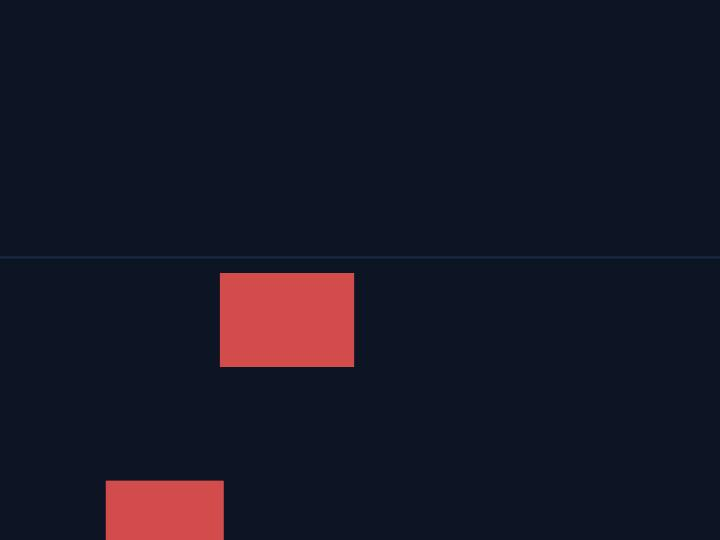
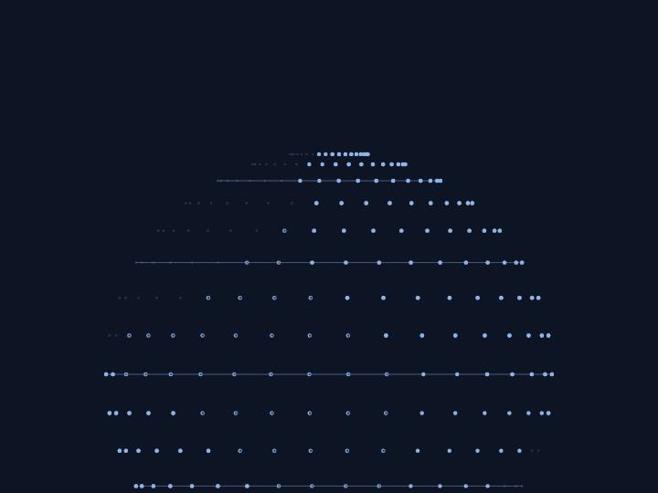
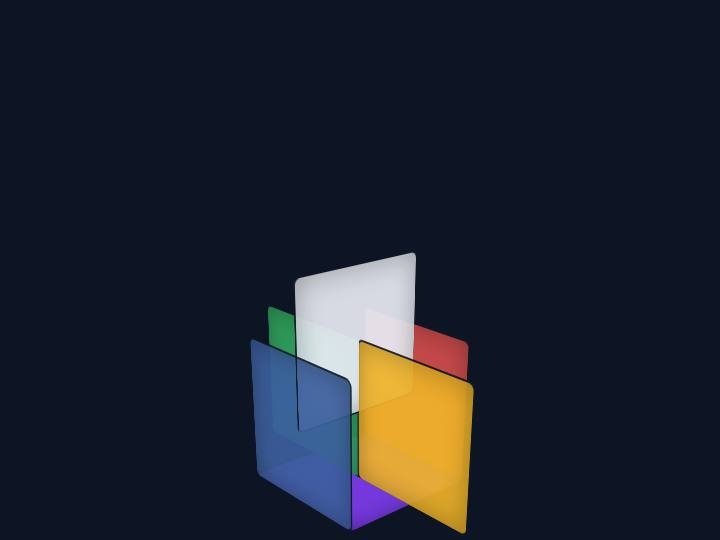
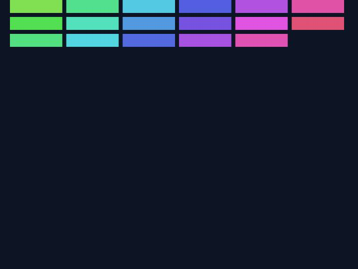
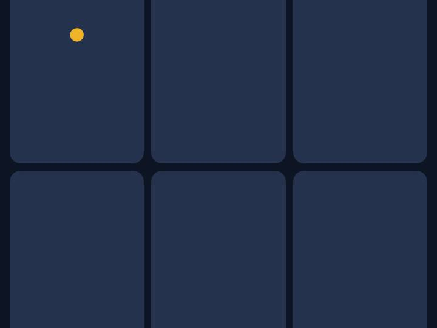
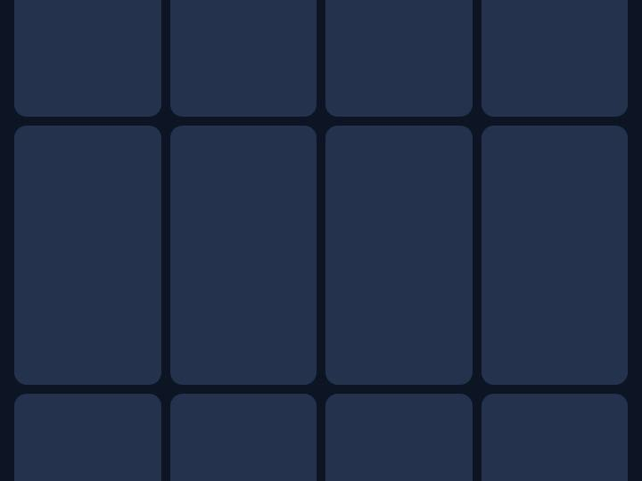
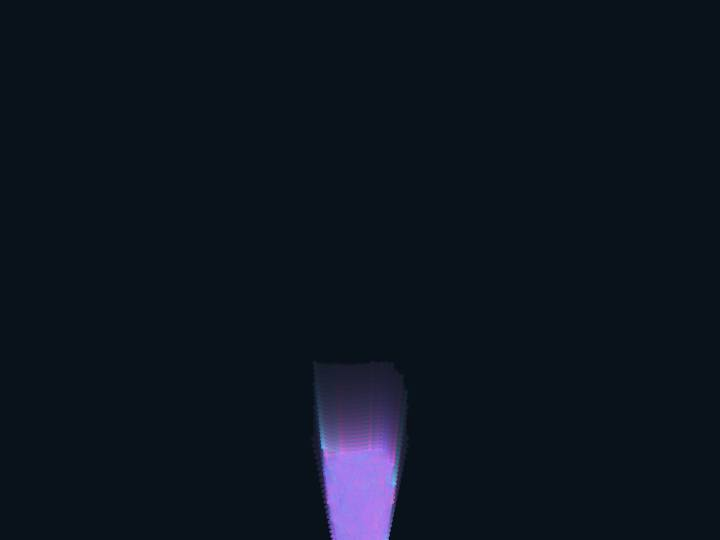
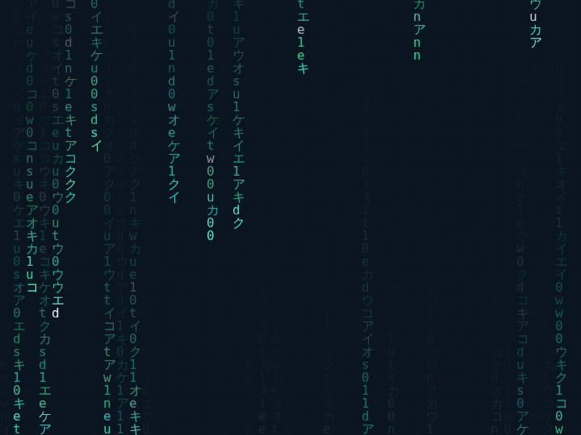
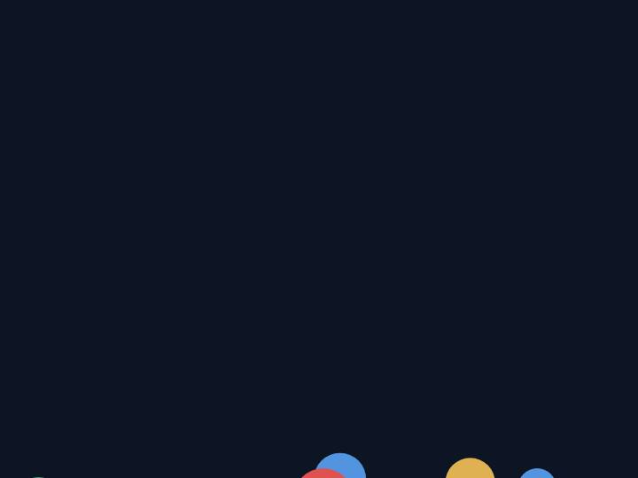
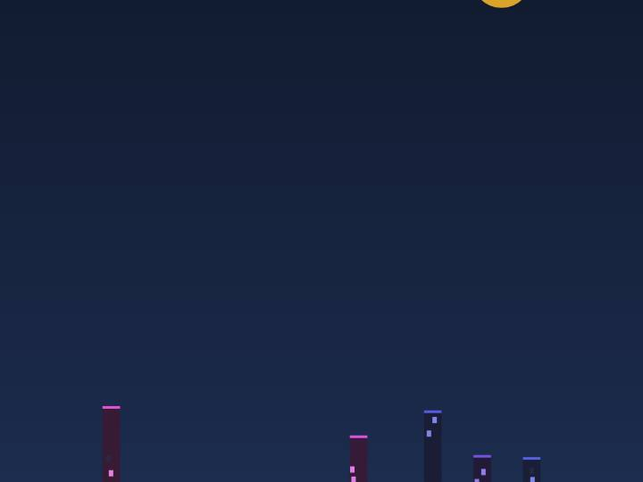

在线示例
单文件网页能做成什么样子？看这些 —— 全部由 wendust 的技术栈写成。

3D 公路跑酷
3D 线框地球
3D 魔方 贪吃蛇
贪吃蛇

打砖块
打地鼠
记忆翻牌
粒子星云
数字雨
弹跳球物理
霓虹城市下载
wendust 从 2026 年 7 月的 v1.0 起步——那时它只做一件事：在手机上写网页三件套，一键打包成 APK。v5.5 引入 Android 原生路线，Java 和 XML 也能在手机上写了；v8 系列带来工作台与联网协作，v9 上线插件中心，五十个开源插件一键安装；v10 把模板、示例、片段、备份一次补齐；v12 系列专注打磨打包体验——独立包名、自定义版本、水印移除、链接内开、下载管理，直到 v12.0.8 完成打包稳定性大修并加入打包自检机制。而 v13.0 把 wendust 带进了云端时代：注册账号即拥有 200MB 免费加密云端——项目一键备份恢复、云端文件同步，密钥由你的密码在本地派生，密码本身从不出设备。v13.1 进一步带来同步仓库：账号中心一键把本地全部项目推送云端、云端独有的项目自动拉回，每个项目独立入仓，历史版本永久可回溯。历史版本中的独立版 wendust Pro 已于 2026 年 10 月正式下架：一人维护两款软件精力过于分散，其自绘弹窗体系与全部能力已并入 wendust 正线，此后 wendust 只发一个版本。v14.0.0 是一次焕新大版本：界面整体换成原生安卓绿（参考 AIDE 的桌面级 IDE 观感），内置 96 篇从入门到精通的 HTML 教程（每篇配可运行的练习），并带来自定义语法系统——在设置里创建自己的语言，为每个语法标记填上对应的 HTML、CSS 和 JS，运行时自动映射，配合内置的 xml、java、css、html、js 五大语法使用。v14.0.1 教程大修：96 篇正文全部扩写至千字级详讲（平均 1200 字）。v14.0.2 热修教程阅读：改用 WebView 原生测高加多轮重试，并加触摸放行兜底，部分机型上长文只能看到开头的问题彻底解决。v14.0.3 教程文风专业化：96 篇正文清除比喻拟人等 AI 式修辞（97 处），统一为直接专业的技术表述。v14.1.0 品牌扩展：LOGO 铸币的微尘货币上线，签到（连签 7 天加码）、课程练习、打包成功都能攒微尘；尘晶抽奖单抽 100 微尘、每日 20 次，中奖率 24%——传说档合计 0.6% 可中自定义语法槽位 +2、云端扩容 +1GB 与限定称号「造物主」，其余 76% 谢谢参与，概率内置公示，改名卡可跳过 7 天改名冷却，主界面顶栏即有「抽奖」入口，v14.1.2 修复设置 > 微尘页打开空白的布局问题；吉祥物小尘 Dusty 同步入驻微尘与抽奖页。v14.2.0 带来 wendustJS 原生能力桥：JavaScript 直接调用提示、震动、剪贴板读写、设备信息、分享、相机、相册选图、定位、保存文件等十项原生能力，打包 APK 时自动内置进你的项目——无需引入任何文件、零水印，编辑器预览同步生效；预览控制台新增网络面板，每个资源请求的路径与大小一目了然；模板中心同步上线「wendustJS 演示」模板。v14.3.0 积木编程正式回归：像搭积木一样拼网页逻辑——18 种积木覆盖事件、动作、变量与控制流，Switch 匹配块按变量值走分支、其余情况兜底；选块填参排好序，点「生成代码」即变成真正的 JavaScript 并自动挂载到 index.html，与手写代码共存互不覆盖。积木是代码的另一种生成方式，不是另一套系统。v14.4.0 积木大扩编：新增播放声音、设置背景图、读取输入框、跳出循环、随机数等 12 种指令方块，积木总数达到 30 种；编辑工具五件套上线——复制积木、撤销（60 步）、预览代码、清空积木与帮助；新建项目新增第三种类型「纯积木」，创建即带挂载壳与起步积木，全程不碰代码也能做出会响、会动、会变脸的应用。v14.5.0 把多邻国的「边学习边玩」搬进教程中心：96 课变身闯关地图，练习通关攒 XP 升级（见习学徒一路铸到传奇铸造主）、学习连击每满 7 天奖微尘、不看答案一次跑通记 3 星、每日目标可调 20/50/100 XP，通关当场弹反馈条加小尘鼓励语——即时正反馈、碎片化、平滑过渡到真代码，一套全齐。v14.6.0 把积木推上舞台：上传图片建角色、拖动摆位、换全屏背景，点角色选「绑积木」——放个「当点击角色」接任意动作，运行时点这张图就会执行。35 种积木，从分支匹配到舞台事件，一张图也能有自己的逻辑。v14.6.1 修掉了原生编译的一个老毛病：之前在手机上打包原生项目会报一串「org.eclipse.jdt...」的天书，其实是软件自己的错，不是你的代码错。现在编译器直接内置，离线就能打包，报错也说到具体行号。同日热修：舞台里添加的角色现在会即时同步到积木编辑器，绑积木不再扑空。又一热修：设过背景图的项目重开舞台必崩的问题已解，背景图正常显示。v14.6.4 给「边学边玩」补上动画的灵魂：练习通过反馈条滑入弹跳、XP 飘字上浮、首通星星依次点亮、连击达标呼吸庆祝——每一次正反馈都看得见。v14.6.4.9.4 上线课后答题与错题本：练习通关弹一道课后题，答对 +5 XP，答错或跳过存入错题本随时温故——用答案白嫖积分这条路被堵上了。文章阅读也改成直接完整显示，划不动成为历史。v14.6.4.9.5 把教程正文从 WebView 方框换成原生文字直铺，彻底去框。v14.6.4.9.6 修复教程练习误报「预览有报错：null」的问题，并修复部分机型上打包签名证书一直加载失效的老毛病——新设备打包的签名从此稳定，已装应用的覆盖升级不受影响。v14.6.4.9.7 积木第三次扩编：新增 20 种、总数 55，全新「判断」类目（判断是否为、是否存在、变量是否存在、是否操作）与弹窗问答、本地存档、滑动长按事件、角色说话气泡等实用块；原名有误的「Switch 匹配」更名「分支匹配」；纯积木项目代码改为只读，逻辑一律由积木生成；微尘上线兑换所——80 换改名卡、200 换语法槽位 +2、300 换云盘 +200MB、1000 点亮称号「造物主」，积分从此有真实用处。v14.6.4.9.8 给安装包做了一次大瘦身：54.3MB 降到 21.8MB（-60%），只是清掉了 AI 功能下架后遗留的无人调用本地库并全量重压缩——积木 55 种、判断类目、兑换所、代码锁，功能一个不少；签名证书不变，覆盖安装直接升级。v14.6.4.9.9 积木全面体检：「点击角色」「显示」「隐藏」「移动」「角色说话」五个角色积木因内部查找函数作用域错误此前全部静默失效，现已修复复活；生成代码统一加页面就绪保护、「打开链接」改为应用内跳转、「当点击舞台背景」不再被角色点击误触发。v14.6.5.0 界面大修：主界面顶部快捷区六入口全部露出（新建、教程、模板、示例、精选、社区），底部导航扩到四项，新用户首启有三屏引导，空项目页不再是白板；并新增应用内社区页——作品展示、问题求助、经验交流，站内直达。
两个月、五十余个版本的迭代记录，全部沉淀在 GitHub：完整更新日志、从 v8.0 起每一个可安装的历史版本，都在仓库里随时可查、可下载、可回溯。
下载 wendust v14.6.5.0 完整更新日志与全部历史版本：GitHub Releases需要电脑版或便携软件包？点这里